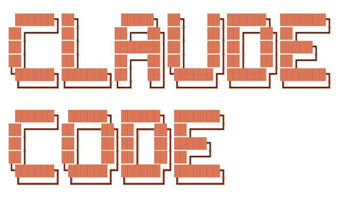

Claude Code
Every wrong assumption, every self-correction, every reasoning chain - saved as clean Markdown, right inside your repo.
So the next session doesn't repeat the same mistakes.
An agent tried the obvious fix, ran the tests, realized it didn't work, and self-corrected. All of that reasoning - including the wrong turns - is now part of the repo.
# Fixing duplicate payment charges on retry
---------------------------------------
## 🧑 User
Can you please fix the duplicate charge bug on payment retry?
**Attachments:** `charge.ts`, `stripe.ts`
---------------------------------------
## 🤖 Assistant
Let me look into this.
### Tool Calls
- **readFile**: `charge.ts`, `stripe.ts`, `Order.ts`
- **editFile**: `charge.ts` - added status check guard
- **runTerminal**: `npm test`
1 test failed - race condition: two concurrent requests
both read `pending` before either writes.
### Tool Calls
- **readFile**: `Order.ts`
- **editFile**: `charge.ts` - added DB-level lock
- **runTerminal**: `npm test`
1 test failed - same issue, lock doesn't cover the
webhook path.
### Tool Calls
- **readFile**: `stripe.ts`, `Order.ts`
- **editFile**: `charge.ts` - atomic status transition
- **editFile**: `stripe.ts` - skip already-processed
- **runTerminal**: `npm test`
✅ All tests pass.
**Summary:**
The duplicate charge happened because retry
created a second PaymentIntent while the first was still
in flight. A simple status check didn't work because both
requests read `pending` at the same time. The fix was an
atomic `pending → processing` transition so only one
request can proceed, plus an idempotency key so Stripe
deduplicates on their end.Contrails runs in the background. You code with your agent as usual - it handles the rest.
Detects new or modified chat sessions instantly.
Chats are parsed into structured Markdown with all the details.
Outputs parsed chats to contrails/ directory in your project.
Processes new chats only, or all chats anytime.
Three steps. No configuration files. No CLI commands.
Contrails discovers projects with agent chat sessions automatically. Pick one, or browse to a custom path.
File watchers start immediately. Every new or modified chat session is detected in real-time and queued for processing.
Clean .md files land in contrails/ inside your project, named after the session title, with full history preserved.
Agents forget everything between sessions. Your repo shouldn't.
Agents start every session with a blank slate. Attach a contrail and they inherit the full context - what was tried, what worked, and why.
The agent tried a simple status check last time and it failed under concurrency. That's in the contrail now - the next session won't make the same wrong assumption.
New to the codebase? Read the contrails. They show not just what changed, but the reasoning, the dead ends, and the final approach.
Which model was used? What tools did it call? Did it self-correct? A permanent, version-controlled record of every AI-assisted decision.
Works with GitHub Copilot, Claude Code, and Cursor.
Free, open source, and runs entirely on your machine.